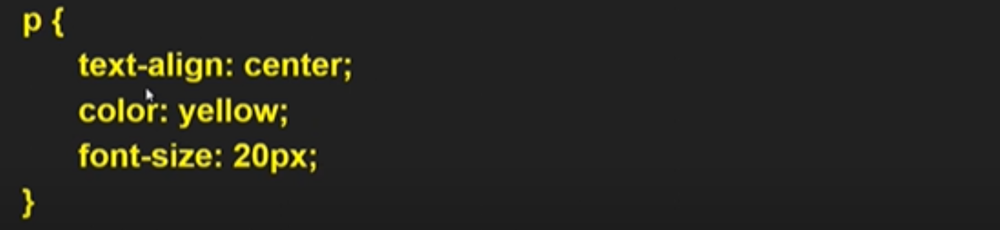
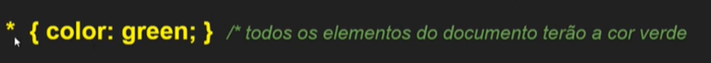
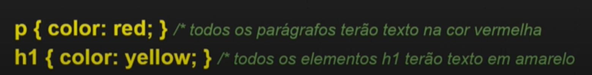
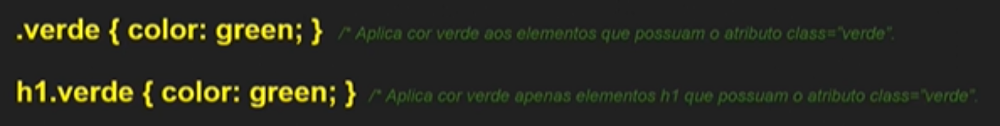
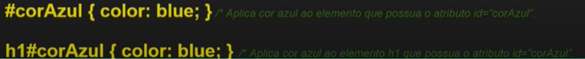

Documentos CSS são empregados para estilizar o conteudo de um documento HTML, ou seja, controlar a apresentação de documentos de marcação O HTML controla a estrutura de uma página, ao passo que o CSS determine sua aparência Uma folha de estilos é uma coleção de regras de formatação aplicadas a um documento HTML
As regras do CSS podem ser aplicadas de três formas distintas:
Os estilos são aplicados na ordem em que são encontrados, cascateando dos estilos externos até os estilos inline
Regra CSS é a unidade básica de construção de uma folha de estilos.
Sintaxe de uma regra:
A regra é composta de um seletor(alvo da regra) e de uma declaração(parâmetros de estilo)
A declaração, por sua vez, é composta por um par propiedade: valor
Abaixo temos uma regra CSS que aplica três declarações:
1 - Seletor Universal: Representa todos os elementos. Simbolizado pelo *
2 - Seletor de tipo (ou de elemento): Representa um determinado elemento.
3 - Seletor de classe: aplica estilo a elementos com atributo class definido
4 - Seletor de ID: aplica estilo a elementos com o atributo id definido.
